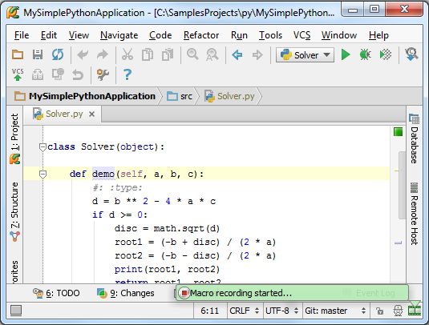

1、为什么使用宏
加入你需要重复某种操作很多次，例如选中源码并将其发送到控制台端调试，我们能不能将着一系列操作简化为一步，甚至用一组快捷键来代替呢？
2、准备工作
（1）Pycharm版本为2.7或者更高。
（2）与 product documentation中的行为保持一致。
（3）创建了一个项目，并向其中添加了至少两个脚本，详见Getting Started和 Debugger
3、录制宏
在主菜单上选择Edit→Macros→Start Macro Recording命令，在窗口底部出现Macro recording started的提示信息。

打开你想要执行的脚本文件（注意Using Macros in the Editor中所描述得列表限制），然后进行对应的需求操作：
（1）全选编辑器中的代码（例如在编辑窗口中按下Ctrl+A）
（2）右击，在弹出的快捷菜单中选择Execute selection in console命令
然后单击主菜单的Edit→Macros→Stop Macro Recording命令，Pycharm会提示你保存当前记录的宏。此时如果未指定宏明，Pycharm会将其设定为一个临时的宏命令，这里我们将这个宏命名为 "Run in console"：
此时，再次查看Edit→Macros菜单，我们会在列表中发现我们刚刚定义的宏命令：
4、为宏命令指定快捷键
接下来我们为这条宏命令指定一个快捷键组合，做法如下。
在设置对话框中，打开Keymap页，展开Macros节点，找到我们新添加的宏命令"Run in console"，右击，在弹出的快捷菜单中选择Add keyboard shortcut：
接下来，在Enter keyboard shoctrut dialog对话框中指定期望的快捷键组合。注意此时我们只能通过鼠标指针来单击对话框中的控件，任何键盘操作都会被认为是快捷键的设置内容。
如你所见，系统并未提示相关快捷键冲突，我们的设置可用，单击应用并关闭对话框。此时新增的快捷键会显示在菜单中：
5、宏命令的使用
现在我们完成了一个宏命令的私人订制。此时我们可以在控制台端运行任何已打开的脚本文件。我们可以通过菜单命令Edit→Macros→Run in console来实现，也可以通过快捷键Alt+R来更为快捷的完成这个功能。我们尝试一下：
在编辑器中打开另外一个脚本文件，按下Alt+R，OK，脚本被自动加载到了控制台中并运行：